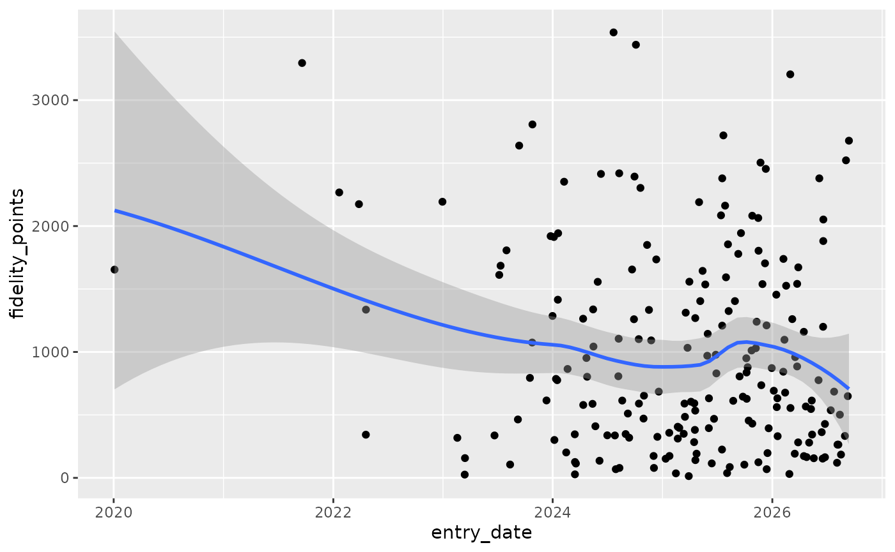
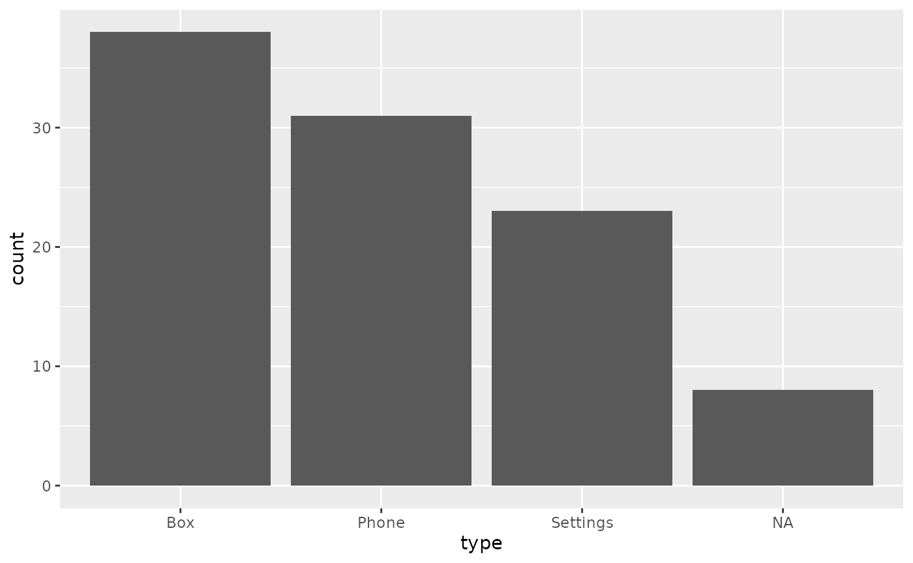
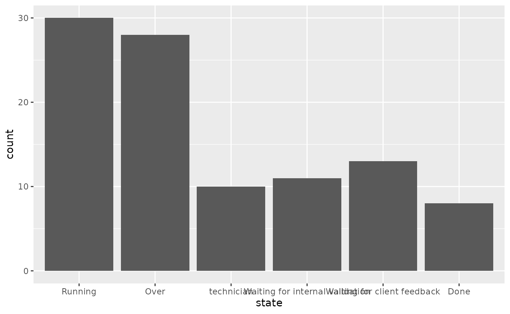
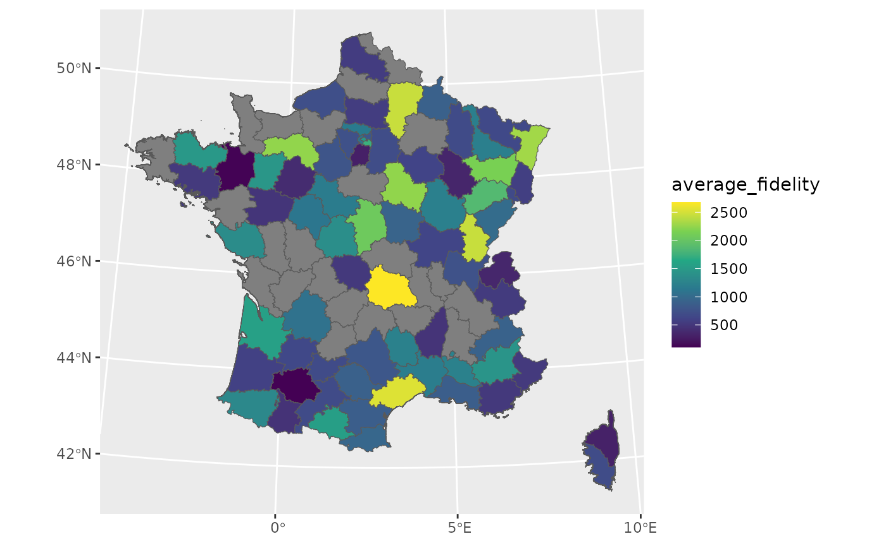
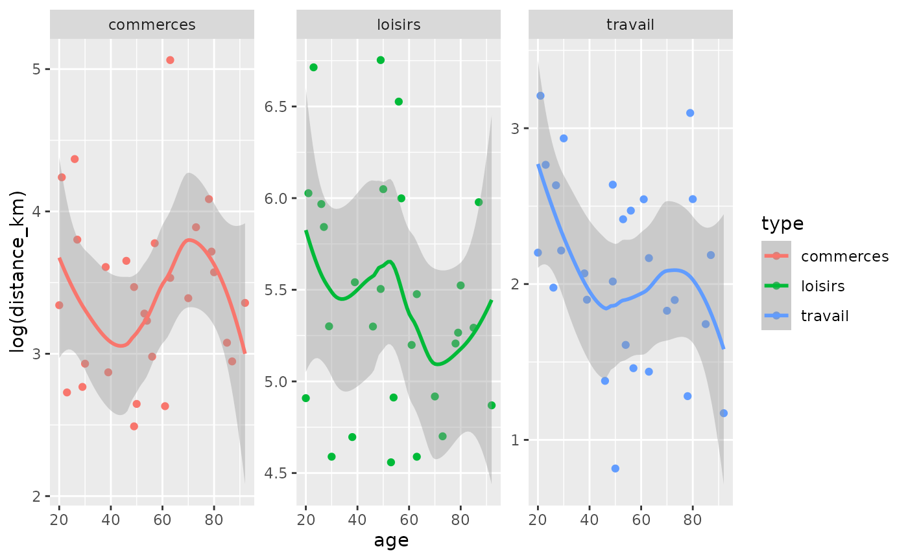

Fake client database
The database fakes an after-sale client database for a Phone company. There is:
a client database with all characteristics of the clients.
a ticket database which contains all calls to the after-sale service of some clients having problems
Ticket centered dataset with already joined client characteristics
fake_ticket_client(vol = 10)
#> old-style crs object detected; please recreate object with a recent sf::st_crs()
#> # A tibble: 10 × 25
#> ref num_client first last job age region id_dpt departement
#> <chr> <chr> <chr> <chr> <chr> <dbl> <chr> <chr> <chr>
#> 1 DOSS-AMQN-002 79 Jovan O'Ke… Gene… 22 Picar… 60 Oise
#> 2 DOSS-NCKJ-010 69 Miss Lean… Emer… 68 Rhône… 07 Ardèche
#> 3 DOSS-GPBE-009 120 Odell Stok… Engi… 24 Poito… 86 Vienne
#> 4 DOSS-GRLN-001 31 Loren Lars… NA NA Île-d… 78 Yvelines
#> 5 DOSS-LEPJ-004 59 Maybelle Maye… Furt… 18 Aquit… 24 Dordogne
#> 6 DOSS-DUCL-005 118 Jamarion Ober… Engi… 18 NA 33 Gironde
#> 7 DOSS-OCED-003 77 Lee Scha… Admi… NA NA 16 Charente
#> 8 DOSS-KXSJ-007 65 Demetric Auer Cont… 21 Champ… 51 Marne
#> 9 DOSS-UITD-006 141 Wilfrid Harv… Educ… 53 Rhône… 69 Rhône
#> 10 DOSS-SHKL-008 182 Addyson Nien… Earl… 65 NA 40 Landes
#> # ℹ 16 more variables: cb_provider <chr>, name <chr>, entry_date <dttm>,
#> # fidelity_points <dbl>, priority_encoded <dbl>, priority <fct>,
#> # timestamp <date>, year <dbl>, month <dbl>, day <int>, supported <chr>,
#> # supported_encoded <int>, type <chr>, type_encoded <int>, state <fct>,
#> # source_call <fct>- Separate tickets and client databases
tickets_db <- fake_ticket_client(vol = 100, split = TRUE)
#> old-style crs object detected; please recreate object with a recent sf::st_crs()
tickets_db
#> $clients
#> # A tibble: 200 × 14
#> num_client first last job age region id_dpt departement cb_provider
#> * <chr> <chr> <chr> <chr> <dbl> <chr> <chr> <chr> <chr>
#> 1 1 Solomon Heaney Civi… 53 Champ… 08 Ardennes Diners Clu…
#> 2 2 Karma William… Scie… 81 NA 22 Côtes-d'Ar… VISA 13 di…
#> 3 3 Press Kulas Anim… NA Midi-… 12 Aveyron NA
#> 4 4 Laken McDermo… NA NA Prove… 05 Hautes-Alp… NA
#> 5 5 Sydnie Jaskols… Hort… 30 Champ… 52 Haute-Marne NA
#> 6 6 Clayton Runolfs… Comm… NA NA 01 Ain Diners Clu…
#> 7 7 Roberta Purdy-W… Fina… 60 NA 85 Vendée NA
#> 8 8 Dr. RonaldM… Astr… 30 Pays … 85 Vendée NA
#> 9 9 Miss Alondra… Occu… 18 Midi-… 82 Tarn-et-Ga… Diners Clu…
#> 10 10 Vernice Ondrick… Clin… 19 NA 68 Haut-Rhin NA
#> # ℹ 190 more rows
#> # ℹ 5 more variables: name <chr>, entry_date <dttm>, fidelity_points <dbl>,
#> # priority_encoded <dbl>, priority <fct>
#>
#> $tickets
#> # A tibble: 100 × 10
#> ref num_client year month day timestamp supported type state
#> <chr> <chr> <dbl> <dbl> <int> <date> <chr> <chr> <fct>
#> 1 DOSS-GFEL-0028 1 2020 5 25 2020-05-25 No Box Runn…
#> 2 DOSS-UWYV-0016 22 2024 3 17 2024-03-17 No Box Wait…
#> 3 DOSS-DKFC-0073 9 2024 4 21 2024-04-21 No Box Runn…
#> 4 DOSS-SAYJ-0047 8 2024 5 5 2024-05-05 No Phone Over
#> 5 DOSS-GSMZ-0080 30 2024 5 23 2024-05-23 Yes Box Over
#> 6 DOSS-UIOZ-0085 10 2024 6 4 2024-06-04 Yes Setti… tech…
#> 7 DOSS-DSMI-0065 37 2024 7 2 2024-07-02 No Box tech…
#> 8 DOSS-JOYV-0029 37 2024 8 22 2024-08-22 No Box Over
#> 9 DOSS-WPSG-0013 24 2024 8 29 2024-08-29 No Setti… Over
#> 10 DOSS-NHFG-0036 12 2024 9 15 2024-09-15 No Setti… Over
#> # ℹ 90 more rows
#> # ℹ 1 more variable: source_call <fct>- Explore datasets
ggplot(tickets_db$clients) +
aes(x = entry_date, y = fidelity_points) +
geom_point() +
geom_smooth()
#> `geom_smooth()` using method = 'loess' and formula = 'y ~ x'


- Join with internal {sf} spatial dataset
fra_sf. {sf} package must be loaded.
clients_map <- tickets_db$clients %>%
group_by(id_dpt) %>%
summarise(
number_of_clients = n(),
average_fidelity = mean(fidelity_points, na.rm = TRUE)
) %>%
full_join(fra_sf, by = "id_dpt") %>%
st_sf()
#> old-style crs object detected; please recreate object with a recent sf::st_crs()
ggplot(clients_map) +
geom_sf(aes(fill = average_fidelity)) +
scale_fill_viridis_c() +
coord_sf(
crs = 2154,
datum = 4326
)
Fake products
- Create a fake dataset of connected wearables
count(
fake_products(10),
category
)
#> # A tibble: 7 × 2
#> category n
#> <chr> <int>
#> 1 Awesome 2
#> 2 Fitness 1
#> 3 Gaming 1
#> 4 Industrial 1
#> 5 Lifestyle 1
#> 6 Medical 3
#> 7 Pets and Animals 1Fake website visits
fake_visits(
from = "2017-01-01",
to = "2017-01-31"
)
#> # A tibble: 31 × 8
#> timestamp year month day home about blog contact
#> * <date> <dbl> <dbl> <int> <int> <int> <int> <int>
#> 1 2017-01-01 2017 1 1 369 220 404 210
#> 2 2017-01-02 2017 1 2 159 250 414 490
#> 3 2017-01-03 2017 1 3 436 170 498 456
#> 4 2017-01-04 2017 1 4 NA 258 526 392
#> 5 2017-01-05 2017 1 5 362 NA 407 291
#> 6 2017-01-06 2017 1 6 245 145 576 90
#> 7 2017-01-07 2017 1 7 NA NA 484 167
#> 8 2017-01-08 2017 1 8 461 103 441 NA
#> 9 2017-01-09 2017 1 9 337 113 673 379
#> 10 2017-01-10 2017 1 10 NA 169 308 139
#> # ℹ 21 more rowsFake questionnaire on mean of transport / goal
- All answers
fake_survey_answers(n = 10)
#> old-style crs object detected; please recreate object with a recent sf::st_crs()
#> # A tibble: 30 × 12
#> id_individu age sexe region id_departement nom_departement
#> <chr> <int> <chr> <chr> <chr> <chr>
#> 1 ID-NYDZ-010 NA NA Provence-Alpes-Côte d… 83 Var
#> 2 ID-NYDZ-010 NA NA Provence-Alpes-Côte d… 83 Var
#> 3 ID-NYDZ-010 NA NA Provence-Alpes-Côte d… 83 Var
#> 4 ID-PWLB-009 71 F Centre 41 Loir-et-Cher
#> 5 ID-PWLB-009 71 F Centre 41 Loir-et-Cher
#> 6 ID-PWLB-009 71 F Centre 41 Loir-et-Cher
#> 7 ID-NMQG-001 42 M Champagne-Ardenne 51 Marne
#> 8 ID-NMQG-001 42 M Champagne-Ardenne 51 Marne
#> 9 ID-NMQG-001 42 M Champagne-Ardenne 51 Marne
#> 10 ID-RJXN-002 71 O Île-de-France 78 Yvelines
#> # ℹ 20 more rows
#> # ℹ 6 more variables: question_date <dttm>, year <dbl>, type <chr>,
#> # distance_km <dbl>, transport <fct>, temps_trajet_en_heures <dbl>- Separate individuals and their answers
fake_survey_answers(n = 10, split = TRUE)
#> old-style crs object detected; please recreate object with a recent sf::st_crs()
#> $individus
#> # A tibble: 10 × 8
#> id_individu age sexe region id_departement nom_departement
#> <chr> <int> <chr> <chr> <chr> <chr>
#> 1 ID-NYDZ-010 NA NA Bretagne 29 Finistère
#> 2 ID-PWLB-009 71 F Provence-Alpes-Côte d… 06 Alpes-Maritimes
#> 3 ID-NMQG-001 42 M Auvergne 03 Allier
#> 4 ID-RJXN-002 71 O Provence-Alpes-Côte d… 13 Bouches-du-Rhô…
#> 5 ID-MROK-007 41 M Bourgogne 89 NA
#> 6 ID-VMKS-004 33 O Rhône-Alpes 01 Ain
#> 7 ID-XEMZ-003 81 O Midi-Pyrénées 32 Gers
#> 8 ID-EUDQ-005 44 M Midi-Pyrénées 12 Aveyron
#> 9 ID-DCIZ-008 92 O Pays de la Loire 49 Maine-et-Loire
#> 10 ID-KPUS-006 57 O Midi-Pyrénées 32 Gers
#> # ℹ 2 more variables: question_date <dttm>, year <dbl>
#>
#> $answers
#> # A tibble: 30 × 5
#> id_individu type distance_km transport temps_trajet_en_heures
#> <chr> <chr> <dbl> <fct> <dbl>
#> 1 ID-NYDZ-010 travail 12.2 voiture 0.15
#> 2 ID-NYDZ-010 commerces 9.61 bus 1.01
#> 3 ID-NYDZ-010 loisirs 549. avion 0.27
#> 4 ID-PWLB-009 travail 11.9 voiture 0.14
#> 5 ID-PWLB-009 commerces 27.4 voiture 0.34
#> 6 ID-PWLB-009 loisirs 210. train 0.42
#> 7 ID-NMQG-001 travail 2.38 velo 0.43
#> 8 ID-NMQG-001 commerces 14.9 voiture 0.18
#> 9 ID-NMQG-001 loisirs 446. train 0.89
#> 10 ID-RJXN-002 travail 6.18 mobylette 0.75
#> # ℹ 20 more rowsfake transport use
answers <- fake_survey_answers(n = 30)
#> old-style crs object detected; please recreate object with a recent sf::st_crs()
answers
#> # A tibble: 90 × 12
#> id_individu age sexe region id_departement nom_departement
#> <chr> <int> <chr> <chr> <chr> <chr>
#> 1 ID-MROK-007 NA M NA 51 NA
#> 2 ID-MROK-007 NA M NA 51 NA
#> 3 ID-MROK-007 NA M NA 51 NA
#> 4 ID-NYDZ-010 49 M Île-de-France 93 Seine-Saint-Denis
#> 5 ID-NYDZ-010 49 M Île-de-France 93 Seine-Saint-Denis
#> 6 ID-NYDZ-010 49 M Île-de-France 93 Seine-Saint-Denis
#> 7 ID-HXOG-015 50 M NA 50 Manche
#> 8 ID-HXOG-015 50 M NA 50 Manche
#> 9 ID-HXOG-015 50 M NA 50 Manche
#> 10 ID-MZNB-024 70 F Midi-Pyrénées 12 Aveyron
#> # ℹ 80 more rows
#> # ℹ 6 more variables: question_date <dttm>, year <dbl>, type <chr>,
#> # distance_km <dbl>, transport <fct>, temps_trajet_en_heures <dbl>
ggplot(answers) +
aes(age, log(distance_km), colour = type) +
geom_point() +
geom_smooth() +
facet_wrap(~type, scales = "free_y")
#> `geom_smooth()` using method = 'loess' and formula = 'y ~ x'
#> Warning: Removed 6 rows containing non-finite outside the scale range
#> (`stat_smooth()`).
#> Warning: Removed 6 rows containing missing values or values outside the scale range
#> (`geom_point()`).